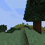

Chapter 13
The drowning alarm works perfectly; the rescue action, however, does not know where dry land is
Prerequisites: Chapters 1 to 12 — including the topological frontier memory (attempt #12), for which a review of the logs here reveals that 12 of the 20 episodes in its own confirmation batch actually ended in drowning.

Beginner track
Where we left off
Chapter 12 ended on a real positive note: the memory of already visited places produced a second real success (1 log chopped out of 20 trials), with a healthy agent behavior, without any sign of locking onto a single action. But this mechanism had a limitation flagged right from its design: when it pushes the agent to explore a less-visited direction, it knows absolutely nothing about the dangers that might lie in its path.
By reviewing the raw logs of this same batch of 20 trials episode by episode — not just the final number, but what the game itself was telling us during each play — a fact was revealed: out of the twenty episodes, twelve ended with a message from the game confirming that the agent had drowned. Not a guess, a real Minecraft server message ("MineRLAgent0 drowned"), found directly in the technical logs of each game. This chapter tells the story of the attempt built directly in response to this discovery, and what it teaches us — a result that, once again, is not a victory, but closes the question with unusual precision.
The problem: no health sensor exists in this specific game
Before building anything, one simple thing had to be checked: does the game send the agent information like "your health bar" or "your underwater air level"? The answer, verified directly in the code of the game environment used here (MineRLObtainIronPickaxeDense-v0): no, none of this exists in what the game transmits to the Python program. Only two things reach the agent: the camera image and the inventory contents. No health, no breath, no air. We must therefore guess "I am drowning" solely from what the screen shows.
The idea: water tints the screen in a recognizable way
In Minecraft, being underwater gives the entire screen a particular bluish tint: the red and green of the image become almost equal, while the blue rises significantly above both. This is a colored fog effect that overlays the entire view, regardless of what is in front of the agent. A small tool was therefore built (mine_jepa/ebwm/hazard.py) that reads the average color of the screen frame-by-frame and compares the blue level to the red and green levels — without any machine learning, just a color calculation.
First calibration, half-failed: night changes everything
The first version compared raw differences in color ("blue exceeds red by so many points"), calibrated on a real drowning observed in broad daylight, confirmed by the game message at the exact moment it occurred. This version worked well for that drowning — but it completely missed a second real drowning that occurred at night. The reason is simple once you see it: in a dark scene, the blue rises proportionally just as much as in broad daylight, but its raw value remains tiny (everything is dark), so a threshold based on absolute differences never triggers.
The fix: compare color ratios rather than absolute differences — a calculation that remains true whether the scene is very bright or very dark, because it compares colors relative to each other rather than to a fixed value.
Serious verification, twice
This new version was run back over approximately 5,900 real images, taken from three entire games that ended well (day, dusk, forest, sky — very diverse scenes) plus the two real drownings already mentioned. The result: zero false alarms on any of the normal gameplay images, the daytime drowning was detected in 100% of its images, and the nighttime drowning in about 81%. The missed 19% were images of almost total blackness, where all three colors collapsed to zero at the same time — a real limitation of a tool based on pixel color in complete darkness, not a simple poorly adjusted threshold.
The wired escape action
When the detector turns on, it takes control: it alternates a jump (to surface and breathe) with a fixed step backward, for a limited time (up to 60 game steps), before handing control back to normal operation.
The live game test, 5 games
- 3 out of 5 games: nothing to report, the detector never triggered.
- 1 out of 5 games: the agent died early, but the detector never triggered — this specific death was therefore not a drowning. A fall, a monster, lava: the Minecraft world can simply be dangerous at a random starting point, and this tool was never intended to cover this type of death.
- 1 out of 5 games, the most interesting: the detector turned on continuously for more than 260 game steps in a row (more than 4 real seconds) — the escape action (jump + backward step) triggered at each step exactly as planned. And the agent died at the end of this sequence anyway.
The verdict: the alarm works, the rescue is blind
The detector itself works: it is accurate, well-calibrated, and it works just as well by day as by night. The real problem lies further down the chain: the action responding to the alarm has absolutely no idea in which direction dry land lies. Alternating a jump and a fixed step backward has no way of knowing whether that step backward leads toward the shore or deeper into the water, or just along a bank without ever getting closer to it. If the direction is unlucky, the agent can remain trapped indefinitely — and a correctly sounding alarm that never succeeds in rescuing is useless in practice.
This is exactly the same kind of lesson this project had already encountered once before, for a completely different mechanism (the "I'm lost" reflex in Chapter 8): a well-calibrated detector is not a solution on its own if the action listening to it cannot resolve the actual situation.
What's next
This result is not deployed as is: it is an honest "no", not a disguised "almost yes". A follow-up path is being explored separately, with no known results at the time of writing: steering the escape action towards the last known location of the agent out of the water, by reusing the same lightweight dead-reckoning tracking tool already built for the memory of visited places (Chapter 12) — no new machine learning, just counting and geometry, same as for that memory itself.
Expert track
Context
Chapter 12 left the topological frontier mechanism (attempt #12) as the positive highlight of the campaign, with a limitation explicitly unaddressed by design: heading selection contains no notion of collision or danger. This chapter covers a free diagnostic and then attempt #13, both stemming from a review of the logs of the N=20 batch from attempt #12.
Free diagnostic: drowning as the dominant cause of early termination
Correlation, episode by episode, between the master batch log and the Malmo client logs (logs/mc*.log, one per playminerl_multi.py subprocess), by file timestamp. 12 of the ~20 episodes contain an explicit server message MineRLAgent0 drowned, directly preceding the last lines of the episode (actual death at the end of the episode, not a survived transient damage tick) — verified again directly in the raw logs, not just copied from a previous report. Episodes reaching the 3000-step ceiling contain no drowning messages — a clean, bimodal split, not a fuzzy trend.
Implication for reading the headline figure of attempt #12 (1/20, 5%): on the subset of episodes that survive long enough to search under fair conditions (not cut short by drowning), the apparent success rate is closer to 1 in 7-8 than to 1 in 20. Both readings are honest; the raw 1/20 remains the actual deployed figure, but attributing the entire gap to a search/approach deficit would be false — a large portion comes from a spawning hazard problem, explicitly outside the scope of FrontierTracker's design (no collision/danger awareness in heading selection).
Attempt #13 — pixel-based drowning detector + escape action: NO-GO, but a clear diagnostic
Reason for pixel choice over state sensor. Verified against the game environment's source code: MineRLObtainIronPickaxeDense-v0 does not transmit any health, breath, or air observations to Python — only the camera image and the inventory. Any detection must therefore happen via the image.
Implementation (mine_jepa/ebwm/hazard.py): underwater, Minecraft tints the entire screen with an achromatically bluish fog (red ≈ green, blue is high). Two average color statistics computed on the frame:
ratio = mean(B) / max(mean(R), mean(G))
rel_rg = |mean(R) - mean(G)| / max(mean(R), mean(G))Calibration v1 (rejected) — absolute differences. Tuned on a real drowning observed in broad daylight, confirmed by the game's death message exactly at step 644 of an episode. Worked on that drowning, but completely missed a second real drowning that occurred at night: in a dark scene, the blue elevation is proportionally just as strong but negligible in raw pixel values — an absolute threshold never triggers.
Calibration v2 (retained) — ratios, invariant to global scene brightness by construction, replacing absolute differences.
Validation on ~5,900 real frames pooled from three complete survived episodes (day, dusk, forest, sky) plus the two real drownings: zero false positives on all surviving frames; 100% of daytime drowning frames correctly detected; ≈81% of nighttime drowning frames. The missed 19% correspond to frames of almost total blackness where all three color channels collapse to zero simultaneously and ratios become too noisy to read — a real limitation of a pixel color heuristic at the bottom of the brightness scale, not a threshold adjustment issue.
Wiring: when triggered, the detector overrides the current output of the planner or search macro with an escape action — alternating jump (to surface) / fixed backward step — for up to 60 game steps per trigger, then hands control back to normal operation.
Live test, 5 real episodes:
| Episode | Detector Trigger | Outcome |
|---|---|---|
| 3 episodes | never triggered | nothing to report |
| 1 episode | never triggered | early death — non-drowning cause (fall, hostile mob, lava — outside the scope of the mechanism by design) |
| 1 episode | triggered continuously for >260 game steps (>4 real seconds), escape action executed at every step as planned | died at the end of the sequence regardless |
Verdict. The detector itself is functionally correct — accurate, well-calibrated, brightness-invariant. The failure is downstream: the escape action (jump + fixed step backward) has no directional information on where dry land is. If the step backward points towards deeper water, or runs along a bank without approaching it, the agent can remain trapped indefinitely without the correctly triggered alarm ever converting into an actual rescue.
Lesson: same pattern as attempt #5 (Chapter 8), on a completely different mechanism. A correctly wired and calibrated "something is wrong" detector is not a fix on its own if the action consuming it cannot resolve the actual situation. There, it was the search reflex in the face of a flat score; here, it is a directionless escape action in the face of a real, correctly detected danger. The common thread: detecting is not acting effectively, and neither of these two mechanisms can correct itself when wired to a blind response action.
Status delivered: NO-GO, not deployed as is. Follow-up path explored separately, outcome unknown at the time of writing: steer the escape action towards the last known out-of-water position, reusing the same lightweight dead-reckoning position tracking tool already built for FrontierTracker (attempt #12) — no learning, only counting and geometry, consistent with the design choice already made for that same mechanism.
Where this leaves the campaign
The drowning diagnostic and attempt #13 do not change the Chapter 11 verdict on the main wall (search/approach to find the first tree) — they isolate a distinct source of mortality partially responsible for the low headline figure of attempt #12, without fully correcting it. ebwm.pt and craftwmv4.pt remain intact: attempt #13 introduces no learned parameters, only a pixel color heuristic and a hand-wired escape reflex.
References
This chapter relies on no new bibliographic references: the drowning detector in attempt #13 is a pixel color heuristic built and calibrated directly on the data of this project, not the application of a published method — in accordance with the project rule of citing only verified arXiv identifiers from docs/references/index.md, none are invoked here for lack of direct relevance.